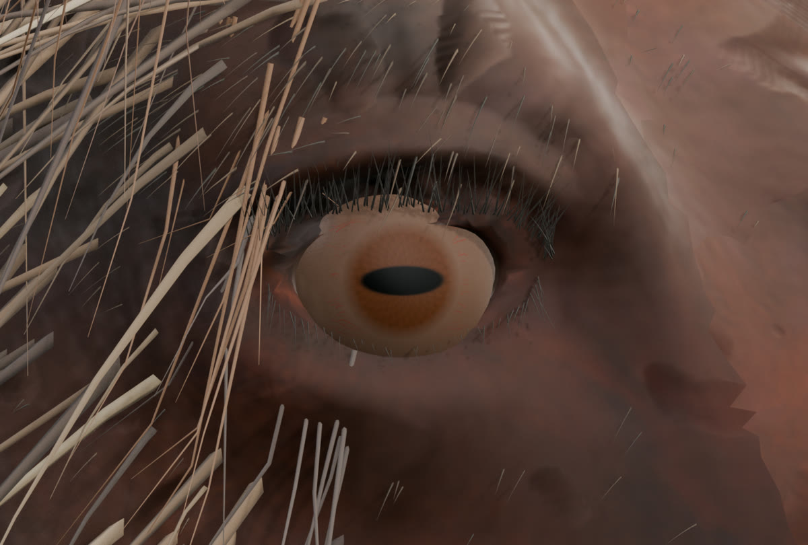
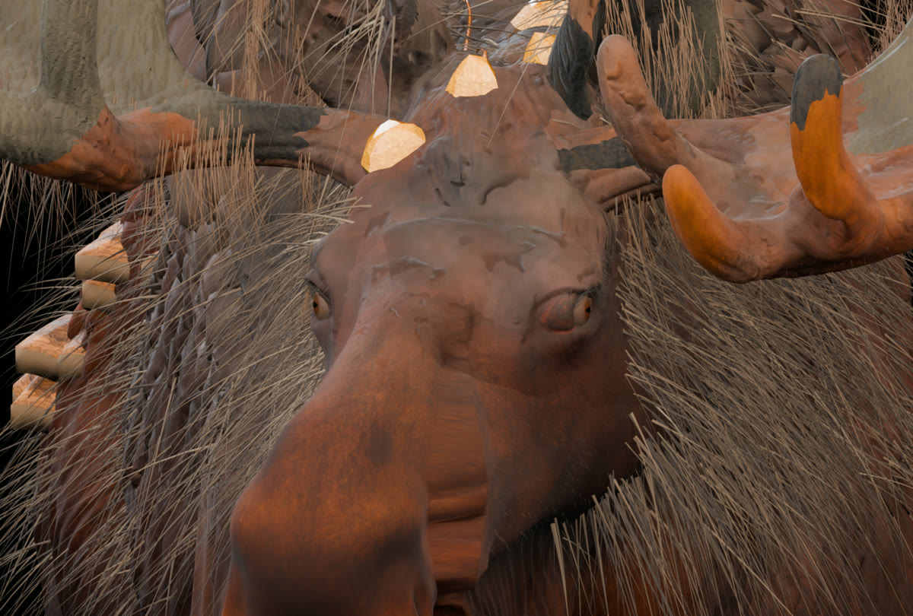
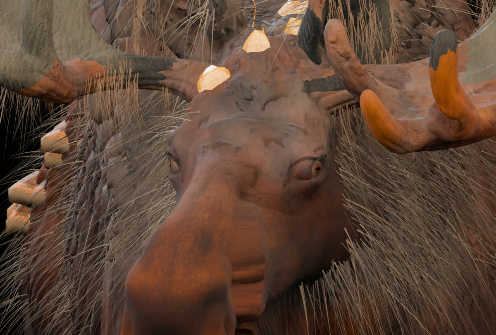

Лось V32R — новая посадка века и согласованные глаза
Это настоящая отредактированная 3D-модель Blender, а не сгенерированное изображение. После замечания по V32Q согласованы оттенок склеры, масштаб UV левого глаза и граница радужки. У левого внутреннего уголка перемещены 63 вершины существующего высокодетального меша века — светлый участок глаза стал значительно меньше. Обе 4K-карты капилляров сохранены.
ЛЕВЫЙ ГЛАЗПРАВЫЙ ГЛАЗ
МатериалыЛевый глаз больше не выглядит белой вставкой; оттенок склеры согласован с правым
ГеометрияСкорректирована посадка 63 вершин века, без новых low-poly объектов
Игровой экспортGLB glTF 2.0, три анимационных клипа, оба канала вращения глаз проверены
До и после — левый глаз
Сравнение реальных рендеров. Исправлены UV-масштаб, тон склеры и зона внутреннего уголка века.


Контроль глаз в двух позах
Морда спереди

